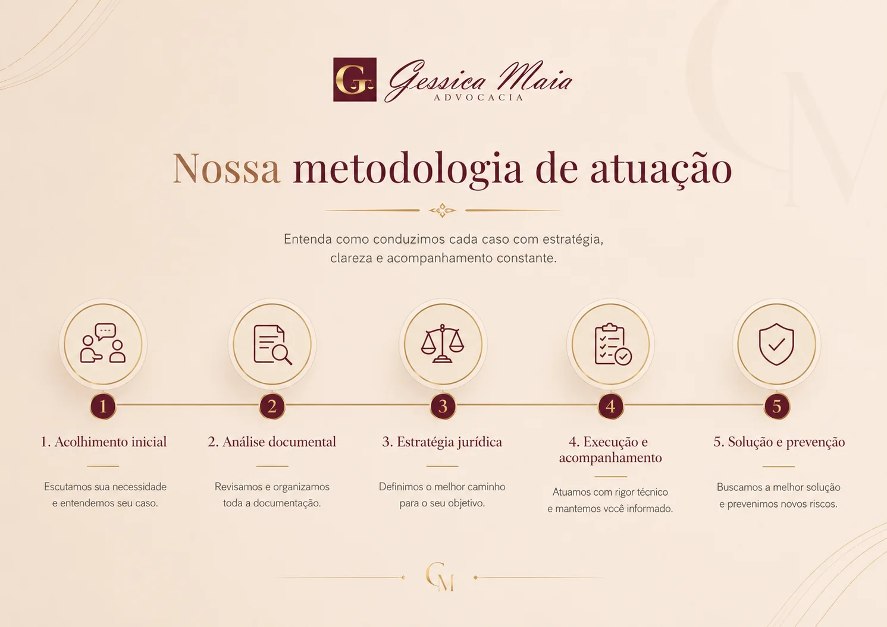
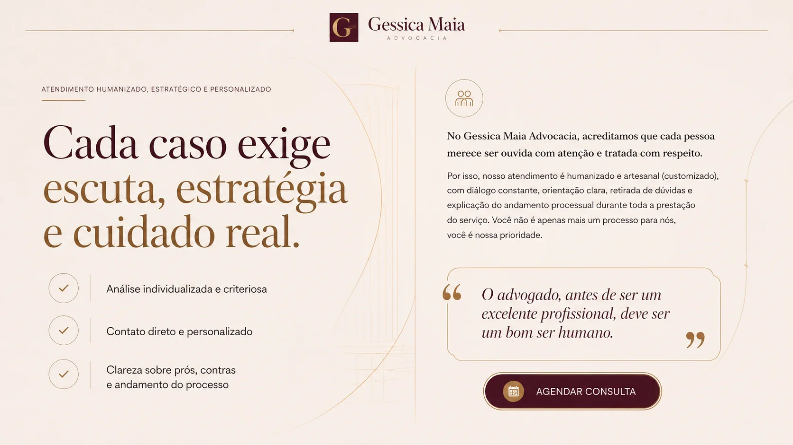

Gessica Maia Advocacia
Advocacia humanizada para família, herança e patrimônio em Fortaleza/CE.
Escritório fundado em 2016, com atuação full service, multidisciplinar e híbrida, que combina estratégia, técnica e sensibilidade para entregar orientação jurídica personalizada.
Atuação com ênfase em Direito de Família, Sucessões, Inventários, Direito Imobiliário, Usucapião e planejamento patrimonial familiar e sucessório.

Como funciona o atendimento
- Primeiro contato: o cliente envia uma mensagem com breve relato da situação.
- Análise individualizada: a equipe avalia o caso com atenção aos detalhes e documentos.
- Consulta jurídica: a situação é aprofundada com orientação clara sobre possibilidades, riscos e próximos passos.
- Acompanhamento: com a contratação formalizada, o caso é conduzido com comunicação constante e estratégia.

Nossa metodologia de atuação
Acolhimento inicial, análise documental, estratégia jurídica, execução e acompanhamento, solução e prevenção.
Atuação estratégica e humanizada
A condução do caso prioriza escuta, clareza, organização documental, comunicação constante e orientação responsável, sem promessa de resultado jurídico.

Conheça Gessica Maia Dantas
Fundadora do Gessica Maia Advocacia, inscrita na OAB/CE nº 33.949 desde 2016, referência em Direito de Família, Herança/Sucessões e Direito Imobiliário.
Confiança institucional
- Escritório desde 2016 no mercado jurídico.
- Atendimento humanizado, estratégico e personalizado.
- Experiência em centenas de processos.
- 5 pós-graduações.
- Participação em comissões da OAB/CE.
- Expertise em Usucapião, Inventários e Direito Imobiliário.
O que você decidir nas próximas etapas pode definir o futuro do seu caso
Você não sabe por onde começar, tem dúvidas sobre inventário, divórcio ou patrimônio, ou precisa de orientação segura para agir com clareza.
Receba orientação jurídica para entender caminhos possíveis, riscos, documentos necessários e próximos passos em demandas familiares, sucessórias e imobiliárias.

Áreas de atuação
Atuação jurídica em Direito de Família, Sucessões e Inventários, Direito Imobiliário, Usucapião, Planejamento Patrimonial Familiar e Sucessório, Direito do Consumidor, Direito Trabalhista e Direito Previdenciário/INSS.
Áreas principais
- Direito de Família.
- Sucessões e Inventários.
- Direito Imobiliário.
- Usucapião.
- Planejamento Patrimonial Familiar e Sucessório.
- Consumidor.
- Trabalhista.
- Previdenciário/INSS.

Casos em que podemos ajudar
Inventário e partilha, divórcio e guarda, usucapião e regularização de imóveis, compra e venda e contratos, pensão, alimentos e união estável, planejamento sucessório e proteção patrimonial familiar.

Atendimento humanizado, estratégico e personalizado
Contato direto com a equipe, análise criteriosa de cada caso e acompanhamento constante e transparente.
Atendimento jurídico presencial em Fortaleza/CE e online, com comunicação clara, organização das informações e condução estratégica.

Cada caso exige escuta, estratégia e cuidado real
No Gessica Maia Advocacia, cada pessoa merece ser ouvida com atenção e tratada com respeito.
A advocacia é conduzida com escuta ativa, análise individualizada, contato direto e clareza sobre o andamento do processo.
Fale com a Gessica Maia Advocacia
WhatsApp: (85) 9 8868-1475. Instagram: @gessicamaia.advocacia. E-mail: juridico@gessicamaiaadvocacia.com.br. Website: www.gessicamaiaadvocacia.com.br.
Avenida Desembargador Moreira, nº 1300, sala 1006, 10º andar - Torre Sul - BS Design, Aldeota, Fortaleza-CE. Segunda a sexta, das 8h às 18h.
Agende sua consulta jurídica
Atendimento presencial e online. WhatsApp: (85) 9 8868-1475. Instagram: @gessicamaia.advocacia. E-mail: juridico@gessicamaiaadvocacia.com.br.
Para a consulta, é recomendado separar documentos pessoais, contratos, certidões, comprovantes, mensagens e demais registros relacionados ao caso.
Perguntas frequentes
Quando devo procurar uma advogada de família?
É recomendável buscar orientação jurídica quando houver dúvidas sobre divórcio, guarda, alimentos, união estável, partilha de bens, acordos familiares ou qualquer decisão que possa impactar família, patrimônio e documentos.
O inventário pode ser feito extrajudicialmente?
Em alguns casos, o inventário pode ser feito em cartório, desde que os requisitos legais estejam presentes. A análise documental é necessária para confirmar o caminho adequado.
O escritório atua com usucapião?
Sim. O escritório atua com demandas de usucapião, regularização de imóveis e análise de documentos ligados à posse, propriedade e histórico do imóvel.
Posso fazer atendimento online?
Sim. O atendimento pode ser presencial em Fortaleza/CE ou online, conforme a necessidade do cliente e a natureza da demanda.
Quais documentos preciso separar para uma consulta?
Documentos pessoais, contratos, certidões, comprovantes, mensagens, documentos do imóvel e demais registros relacionados ao caso ajudam na análise inicial.
O escritório atua apenas em Fortaleza?
O escritório possui endereço em Fortaleza/CE e também pode realizar atendimentos online, conforme viabilidade jurídica e necessidade do caso.